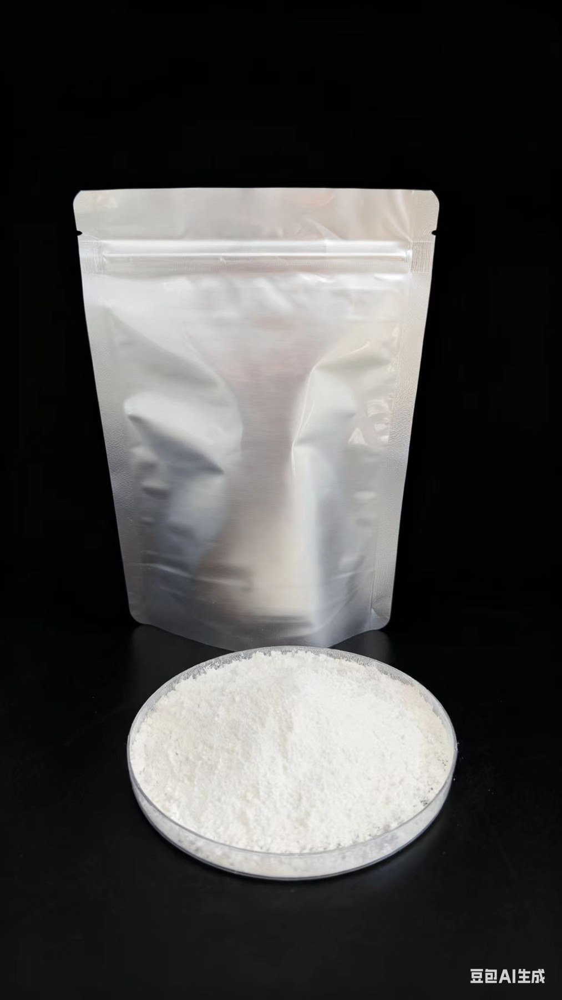
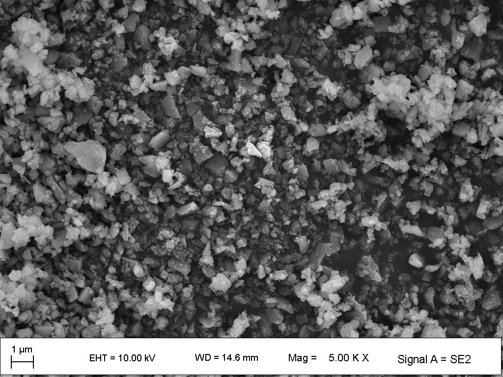
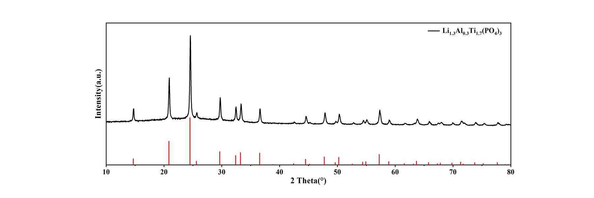
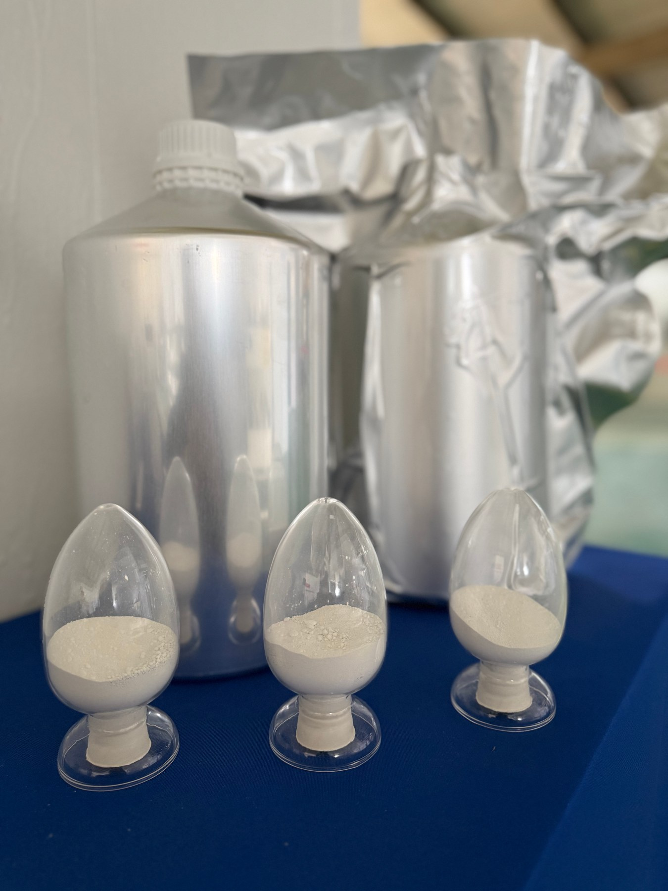
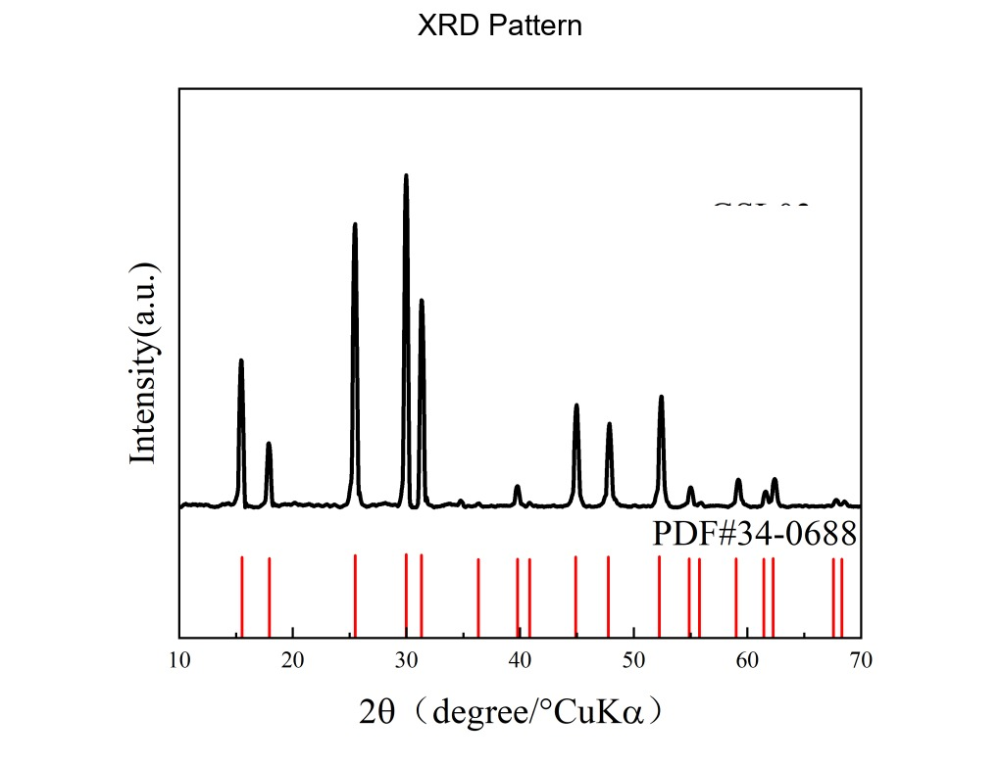
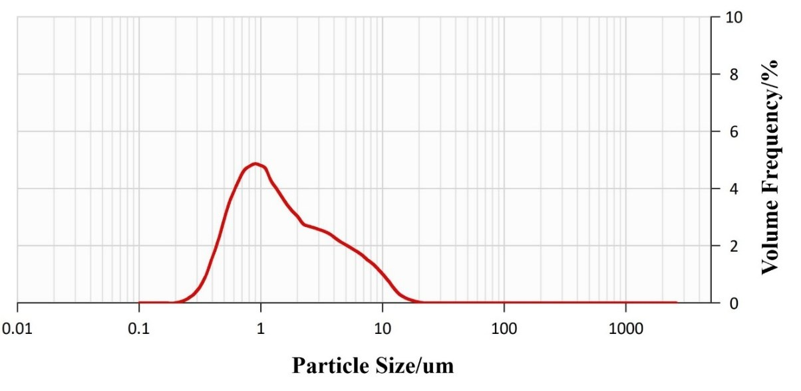

Solid-state batteries attract attention because they promise improved safety, high energy density, and compatibility with next-generation lithium-metal and high-voltage cathode systems. In practice, however, development is rarely limited by a single ionic-conductivity value. Materials that perform well as powders or pressed pellets may struggle when translated into composite electrodes, lithium-metal interfaces, multilayer stacks, or pilot-scale cells.
A practical screening workflow should therefore move through staged evidence:
This progression matters because the requirements for successful materials screening are not the same as the requirements for successful cell development.

Why Powder Conductivity Is Only the First Step
In early-stage screening, it is tempting to compare solid electrolytes by ionic conductivity alone. But solid-state electrolyte performance depends on particle size, pellet density, electronic conductivity, moisture sensitivity, impurity level, phase purity, interfacial stability, and processing route.
A material that delivers strong conductivity in a cold-pressed pellet may still underperform if it shows poor contact with a cathode composite, instability at the lithium-metal interface, or sensitivity to moisture during handling. Similarly, a material with lower nominal conductivity may still be valuable if it offers better processability, lower electronic leakage, or more favorable interfacial behavior.
For battery R&D, powder conductivity should be treated as a starting metric rather than a final decision metric.
Particle Size, Pellet Density, and Pressing Pressure
Particle size is one of the most important variables in solid-state electrolyte screening. It affects powder packing, pellet density, contact area in composite cathodes, cold-press response, slurry behavior, interface uniformity, and reproducibility between labs and scale-up stages.
Winigen's LATP D50 0.30 um, LATP D50 0.40 um, and LATP D50 0.65 um products illustrate this point. These oxide grades are listed with pressed-pellet ionic conductivity specifications of ≥0.55 mS/cm, ≥0.50 mS/cm, and ≥0.30 mS/cm at 25 °C, respectively. Even within one oxide family, particle-size grade and pellet test conditions matter.
The same principle appears in sulfide materials. Winigen's Li5.5PS4.5ClxBr1.5-x D50 0.759 um and D50 >10 um grades span cold-press conductivity values from 6.5 mS/cm to >12 mS/cm. This does not mean larger particles are always better. It means particle-size grade, densification, and test format must be interpreted together.
Conductivity data are most useful when reported with D10/D50/D90, pellet thickness, pellet density, pressing pressure, hold time, test temperature, blocking-electrode method, and whether the value reflects total, bulk, or effective conductivity.



Moisture Control for Sulfides and Halides
Moisture control is a major divider between successful lab screening and noisy development work. For sulfides, moisture can affect surface chemistry, interfacial behavior, and practical handling. For halides, water control can also matter for phase stability and reproducibility, depending on chemistry and processing route.
Winigen's Li6PS5Cl D50 2.123 um page reports 43 ppm water together with D10/D50/D90, ionic conductivity, electronic conductivity, impurity data, and PSD/XRD images. The Li3InCl6 D50 0.9 um page specifies water ≤500 ppm and reports measured ionic conductivity of 1.85 mS/cm at 25 °C together with phase identification by XRD.
That kind of data presentation helps customers move from "interesting material" to "screenable material." Moisture should be tracked not only as a storage issue, but also as a screening variable that can change conductivity, interfacial behavior, and pilot-line transferability.



Cathode Composite Mixing and Interface Contact
One of the biggest gaps between academic materials screening and practical battery development appears at the cathode composite level. A solid electrolyte may look excellent as a standalone pellet, yet fail to deliver good cathode utilization once mixed with active material and conductive additive.
At that stage, the program is no longer only screening a powder. It is screening a composite architecture. Particle morphology, mixing route, solid-electrolyte particle size, binder strategy, and contact mechanics all begin to matter. Fine powders may increase contact area, but they can also affect agglomeration, mixing uniformity, and moisture sensitivity. Larger particles may support different densification or percolation behavior.
The LATP product family illustrates the transition from powder screening to process-oriented materials. Winigen lists particle-size-controlled LATP powders as well as oil-based LATP slurry and water-based LATP slurry formats for formulation and coating development.
Lithium-Metal Interface Screening
For many advanced solid-state battery programs, lithium-metal compatibility is the real bottleneck. Even when a solid electrolyte shows attractive ionic conductivity, lithium-metal contact can introduce interphase growth, impedance rise, current constriction, void formation, filament propagation, and cycling instability under practical areal capacity and current density.
Interface behavior should therefore be tested as a separate stage rather than inferred from pellet data alone. A Nature Communications study on the Li|Li6PS5Cl interface showed that current density affected interphase evolution and interfacial resistance, underscoring that interface behavior is test-condition-dependent rather than a fixed material label.
Useful lithium-metal screening includes symmetric-cell cycling, interfacial impedance tracking, critical-current-density screening, pressure dependence, stripping/plating capacity per cycle, and post-mortem interface analysis.
From Pellets to Multilayer or Pilot-Scale Cells
The transition from materials screening to pilot-line readiness is where many solid-state programs slow down. Pellet studies often use simple geometry, high stack pressure, idealized interfaces, small active areas, short diffusion distances, and carefully controlled assembly. Multilayer and pilot-scale cells introduce larger electrode area, more difficult pressure distribution, cracking and delamination risk, practical composite-electrode thickness, and stronger dependence on moisture control and process consistency.
The screening question shifts from "Can this electrolyte conduct lithium ions?" to "Can this material support a manufacturable and repeatable cell architecture?" That is why solid-state screening should connect materials data with R&D and pilot-scale development support.
Practical QC Package for Solid-State Material Screening
A practical solid-state development program should ask suppliers for more than a chemistry name and one conductivity number. The QC package should include XRD phase identification, D10/D50/D90 particle-size distribution, ionic conductivity, electronic conductivity, moisture or water content, elemental impurity profile, SEM morphology, handling notes, pressed-pellet conditions, slurry properties where applicable, and application notes.
| Material | Family | Particle Size | Conductivity Data | Other QC Data | Screening Lesson |
|---|---|---|---|---|---|
| LATP powder | Oxide | D50 0.30 +/- 0.05 um | ≥0.55 mS/cm at 25 °C, pressed pellet | Water ≤500 ppm; magnetic impurities ≤500 ppb; SEM and XRD images | Particle-size-controlled oxide screening |
| Li6PS5Cl | Sulfide | D50 2.123 um | 3.5 mS/cm ionic; 1.74 × 10-6 mS/cm electronic | Water 43 ppm; elemental impurity panel; PSD and XRD images | QC package beyond conductivity |
| Li5.5PS4.5ClxBr1.5-x | Sulfide | D50 0.759 um to >10 um | 6.5 to >12 mS/cm, cold press depending on grade | Multiple particle-size grades for screening | Particle-size grade and conductivity must be interpreted together |
| Li3InCl6 | Halide | D50 0.9 +/- 0.3 um | Measured 1.85 mS/cm at 25 °C | Water ≤500 ppm; XRD main phase listed; impurity specifications | Halide screening for cathode-side solid-state systems |

Bottom Line
From a battery-development perspective, the most useful solid-state electrolyte is not always the material with the highest single conductivity value. The better question is whether the material can move successfully from powder to pellet, composite electrode, interface validation, and multilayer cell.
That requires a screening framework that includes particle size, moisture control, pellet density, electronic leakage, cathode compatibility, lithium-metal interface behavior, and process readiness. For Winigen Materials, multiple particle-size grades, clear specification tables, and supporting characterization images help researchers evaluate solid-state materials in a way that is closer to practical cell development.
References
- Narayanan et al., Effect of current density on the solid electrolyte interphase formation at the lithium|Li6PS5Cl interface, Nature Communications 13, 7237 (2022).
- Fu et al., Toward garnet electrolyte-based Li metal batteries: An ultrathin, highly effective, artificial solid-state electrolyte/metallic Li interface, Science Advances 3, e1601659 (2017).
- Asano et al., Solid halide electrolytes with high lithium-ion conductivity for application in 4 V class bulk-type all-solid-state batteries, Advanced Materials 30, 1803075 (2018).
- Kalnaus et al., Solid-state batteries: The critical role of mechanics, Science 381, eabg5998 (2023).
- Lu et al., The void formation behaviors in working solid-state Li-metal batteries revealed by operando x-ray tomography, Science Advances 8, eadd0510 (2022).
All original diagrams on this page are © Winigen Materials unless otherwise noted. They may not be reproduced, modified, or redistributed without permission.